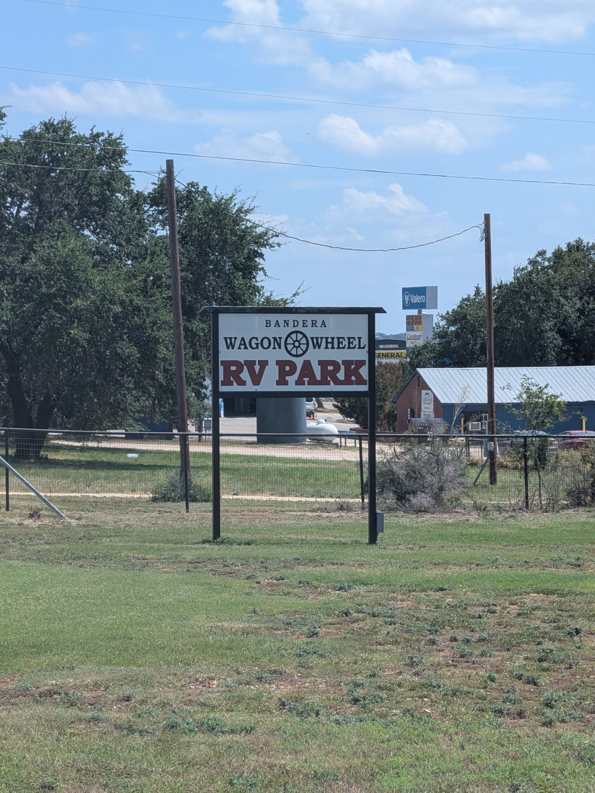
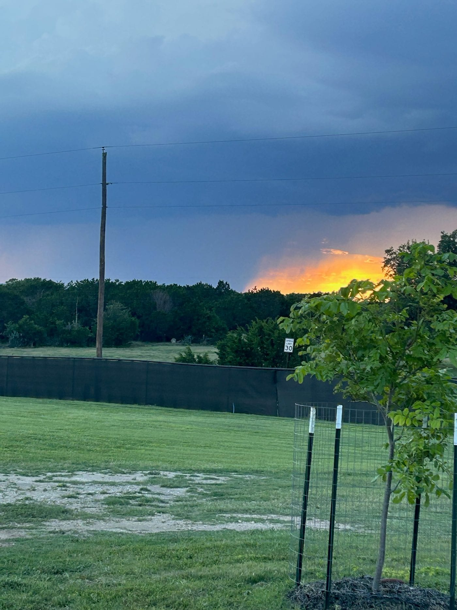
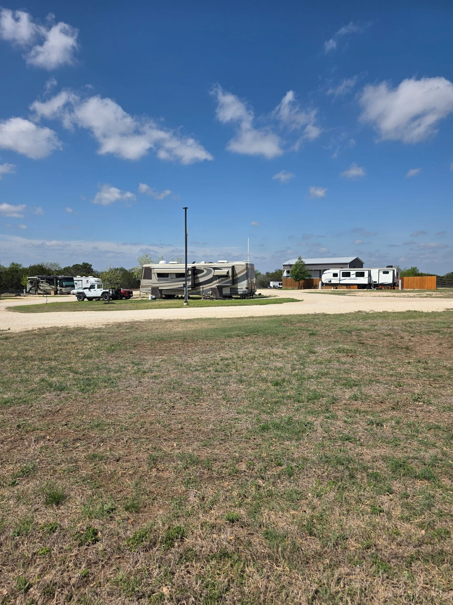

11 × 8.5 in, 2 pages, trim size, no bleed. Ctrl/Cmd+P, set Destination to Save as PDF and leave Margins at Default; Chrome then hides the Paper size picker and the PDF comes out 11 × 8.5 in. A visible Paper size reading Letter means the Destination is a printer or the size rule did not take. Print double-sided, flip on the short edge, fold the inner flap in first.
Safari ignores the page size: set Paper Size to 11 × 8.5 in by hand.
Outside: inner flap, back cover, front cover
About the park
banderawagonwheelrv.com
Contact
Office hours & policies
Full-hookup RV sites in Bandera, Texas Hill Country 325 Polly Peak Dr, Bandera, TX 78003 Office hours: Monday–Friday 8–5, Saturday 9–3, Sunday 1–5. Check-in 3:00pm, check-out 1:00pm.
Reservations
Choose your datesReservations open 24/7 online.
Pick a siteThe booking page shows the rates each site is actually offered at.
Guest details & paymentPayments are processed securely by Square.
Full-hookup RV sites in Bandera, Texas Hill Country
Hill Country, without the drive
A rustic, family-run stop seven minutes from downtown Bandera — the Cowboy Capital of the World.

Reservations open 24/7 online
Inside: panels 1, 2, 3
About the park
Hill Country, without the drive
Bandera Wagon Wheel RV Park sits just outside town in the heart of the Texas Hill Country — close enough that downtown Bandera's shops, honky-tonks, and historic storefronts are a short drive away, far enough that the evenings stay quiet.
12 sites total
30/50 amp full hookup
7 min to downtown Bandera
What to expect
Full hookups
30/50 amp at every site
Pets part of the family
Outside the 100-year floodplain

Amenities
What every site includes
Full hookups, 30/50 amp at every siteSites are simple and well kept, with full hookups ready to go when you pull in.
New high-speed WiFi, park-wideThe managers live on site, so there's almost always someone around to help.
Pets part of the familyBring the dog — there's a dog park (large and small) right on the property.
Reservations open 24/7 online

Amenities
What every site includes
Hookups at every site
Water hookup
30/50 amp electric
Wastewater hookup
Trash service
Keyless entry
New high-speed WiFi
On site
Pet friendly
Dog park — large & small
Management on-site
Laundry on site
Showers
10% military discount — active or retired
Worth the short drive
Downtown Bandera
Medina River
Bandera Brewery
The Shindig
Frontier Times Museum
Bandera Natural History Museum
On higher ground, on purpose:the whole property sits outside the FEMA 100-year floodplain. A hard rain in the Hill Country means a nice view of the Medina River running high — not a 2am scramble to hitch up and move your rig. Call (830) 850-0805